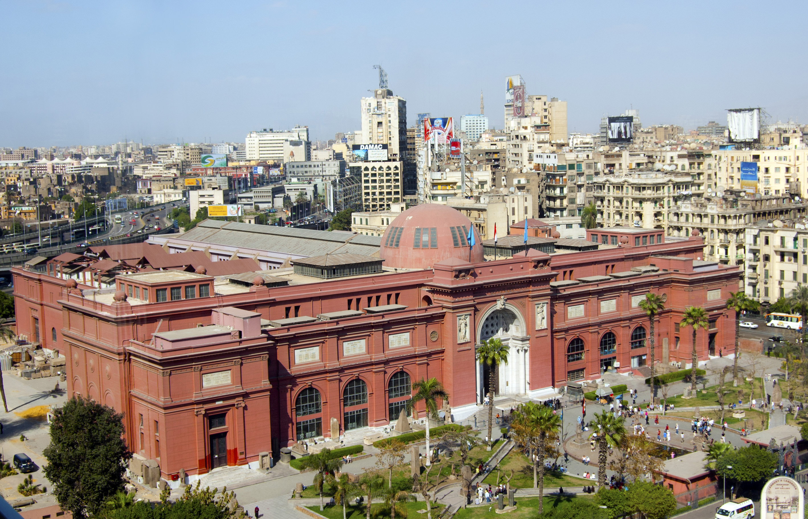

Les pyramides
Les pyramides d'Égypte, de tous les vestiges monumentaux que nous ont légués les Égyptiens de l'Antiquité, et notamment les trois grandes pyramides de Gizeh, sont à la fois les plus impressionnantes et les plus emblématiques de cette civilisation. Si elle fut, à son origine, destinée au roi, l'idée d'une sépulture pyramidale fut rapidement reprise par les proches du souverain. Khéops semble avoir été le premier à autoriser ses femmes à se faire élever un tel tombeau. Tombeaux des rois, des reines et des grands personnages de l'État, dont l'édification remonte pour la grande majorité à l'Ancien Empire, la forme pyramidale de pierre accueille une ou plusieurs chambres internes reliées par des couloirs. La grande pyramide de Gizeh, construite par Khéops, fait partie des Sept Merveilles du monde antique et est classée au patrimoine mondial de l'humanité

La Musee Egyptienne
Le Musée égyptien du Caire est l’un des plus grands musées entièrement consacré à l’Antiquité égyptienne. Il a reçu plus de cent millions de visiteurs au xxe siècle.Plus de 160 000 objets sont aujourd'hui exposés, mais la pièce maîtresse du musée est bien sûr le fabuleux trésor de Toutânkhamon. En outre, soixante mille objets de toutes sortes, statues, statuettes, bas-reliefs, peintures murales, stèles, fausses portes, vases, armes, outils, sarcophages, momies, etc., s'entassent dans les caves, les débarras et les combles du musée égyptien. Mais c'est également dans ces réserves qu'entrent les nouvelles découvertes. Beaucoup d'œuvres ont été oubliées dans la pénombre des réserves. Ainsi la statue funéraire de bois peint et enduit de gypse de Ptahhotep, vizir de la Ve dynastie, découverte en 1940, a passé 65 ans au fond d'une caisse avant d'être retrouvée, en 2005, lors d'un inventaire conduit dans les caves du musée. À voir en commençant la visite à gauche en entrant :
La tour du Caire
La tour du Caire (en égyptien, el-Borg, la tour), représentant un tressage en osier et dont le sommet symbolise une fleur de lotus, est située sur l'île de Gezira dans le quartier résidentiel de Zamalek au Caire.Cette tour, construite par l'architecte Naoum Chebib, fait 187 mètres de haut et fut achevée en 1961. Au sommet, une salle de restaurant rotative, qui effectue le tour complet en vingt minutes, permet une vue panoramique vers tous les horizons du Caire. On aperçoit ainsi :
- à l'ouest de l'autre côté du pont du 6 octobre sur le Nil, le musée égyptien (photo ci-dessous) ;
- à l'opposé, si la brume de pollution le permet, les pyramides sur le plateau de Gizeh ;
- au pied nord de la tour, le Gezira Sporting Club, avec piscines, courts de tennis, et terrain de football ;
- à environ 300 mètres au sud de l'île, les bâtiments de l'Opéra du Caire, construit en 1988 avec un financement du Japon, et inauguré en 1993.
 Retour a l'Accueil
Retour a l'Accueil